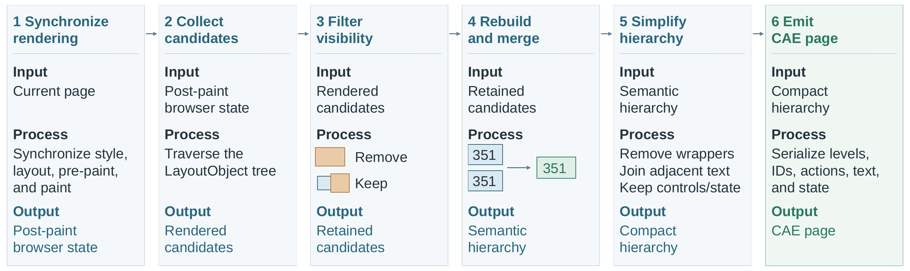
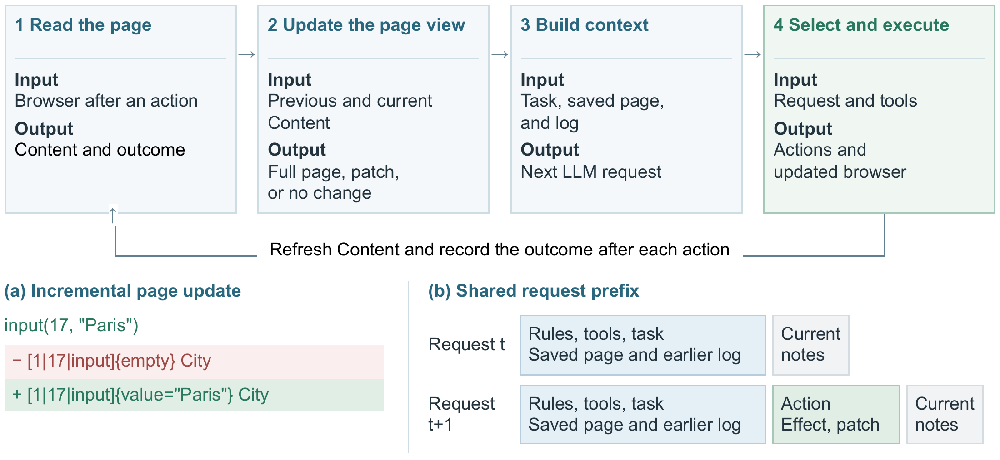

Content
Rendered text and controls, organized by target identity, hierarchy, and visible state.
A browser interface that connects Content, available Actions, and observed Effects. Built for agents that read, act, and update their view of the web.
input(41, "Paris")"" → "Paris"Web agents repeatedly read page state, choose operations, and interpret outcomes. CAE brings these steps into one browser-native representation, grounded in rendering and execution events. CAE Agent uses this interface to maintain a versioned page view and build its next decision context.
Rendered text and controls, organized by target identity, hierarchy, and visible state.
Supported operations listed with their targets, so the model can select an available action.
Observed action outcomes and page changes, carried into the next decision context.
Five agent systems, four LLM backbones, and the same 197 real-website tasks per configuration. Explore the paper's success and cost heatmaps below.
197 selected task executions per cell
Success rate (%) · higher is better
| Agent system | GLM-5.3 | DeepSeek v4.1-flash | Kimi-k3 | GPT-6.1 sol |
|---|---|---|---|---|
| Jev Ultrafast | 17.8% | 17.8% | 18.3% | 20.3% |
| AgentOccam | 20.8% | 20.8% | 27.9% | 26.4% |
| Browser Use | 25.4% | 69.5% | 72.6% | 79.7% |
| AgentBrowser | 81.2% | 84.8% | 86.3% | 84.3% |
| CAE Agent | 83.8% | 85.3% | 87.3% | 86.8% |
CAE Agent completes 85.79% of the 788 selected executions, compared with 84.14% for AgentBrowser. CAE exceeds 83% on every backbone, with a 3.55-point range.
CAE's aggregate API cost is 46.18% lower than AgentBrowser's. Cost per successful task, including failed-task spending, is $0.166 versus $0.315.
Success uses all 197 tasks per configuration; evidence-unresolved executions count as failures under the paper's reporting policy. API costs combine recorded fees and frozen-tariff estimates; failed tasks are included. Systems retain their native action spaces and step definitions. These are complete-system comparisons.
Document structure alone does not tell an agent which controls are covered or which rendered fragments belong together. CAE starts from the browser's post-paint state, then emits a hierarchy with target identifiers, available operations, and control state.

Visibility filtering removes fully covered candidates conservatively. Fragments that belong to one control share an identity, while meaningful structure and form state remain.
Controls use [LEVEL|ID|ACTIONS]TEXT. The agent reads the target and its supported operations together, then observes the resulting changes after execution.

A closed execution loop connects the LLM, ordered actions, and a versioned page view. Refreshed Content and observed Effects inform the next decision.

Tool calls execute in order. Navigation, failure, unavailable Effect reports, or no visible change interrupt the queue so the model can revise its next actions.
Small page changes become versioned patches. Navigation or large changes replace the baseline. Stable instructions and earlier context preserve a reusable request prefix.
On 167 matched entry pages, native CAE outputs contain 26.7% fewer tokens in aggregate than full-page Browser Use DOM outputs.
The comparison captures all three representations from the same browser state, with DOM viewport clipping disabled. Mean CAE output is 3,056 tokens versus 4,171 for DOM.
Native outputs, using o200k_base; system prompts and tool descriptions are excluded. The aggregate reduction describes these captured entry states, not a uniform per-page reduction or a controlled end-to-end cost ablation.
Same 167 browser states · lower is shorter
A collection of 197 real-website tasks with explicit completion checks over independently collected evidence.
Task intents originate from OnlineMind2Web, WebVoyager, and WebGym. Each definition specifies what evidence to retrieve and which deterministic functions determine completion.
The dataset's on-disk name is VerifiedTestSet.
Try CAE in your browser, or run the research agent with Python 3.11+, a tool-calling model endpoint, and a Lexmount ACE-enabled browser.
git clone https://github.com/chenruishi-lexmount/CAE-Agent.git
cd CAE-Agent
ACEAGENT_PYTHON=python3.11 bash Runner/install_python_env.sh
cp .env.example .env
# Configure model and Lexmount browser credentials in .env.
bash Runner/run_cae.sh \
--url https://example.com \
--task "Read the page and report its title." \
--model YOUR_MODELThe browser must support Page.getAIPageContent. Installation and benchmark commands ↗